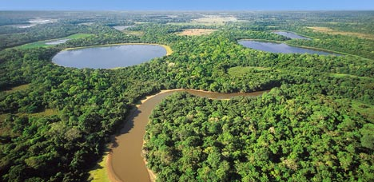
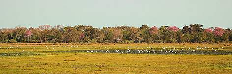

Solos

O bioma apresenta também, solos predominantemente arenosos (Pdzól Hidro mórfico), revestidos com forrageiras nativas. Detém aproximadamente três milhões de cabeças de bovinos de corte e são criadas em regime extensivo de exploração em grandes propriedades, o que faz da pecuária sua principal atividade econômica há mais de 200 anos. Esse sistema tradicional de exploração tem causado impactos externos que ameaçam a biodiversidade e, consequentemente, coloca em risco a sustentabilidade dos ecossistemas dessa imensa planície.

Baixe o aplicativo agora no android